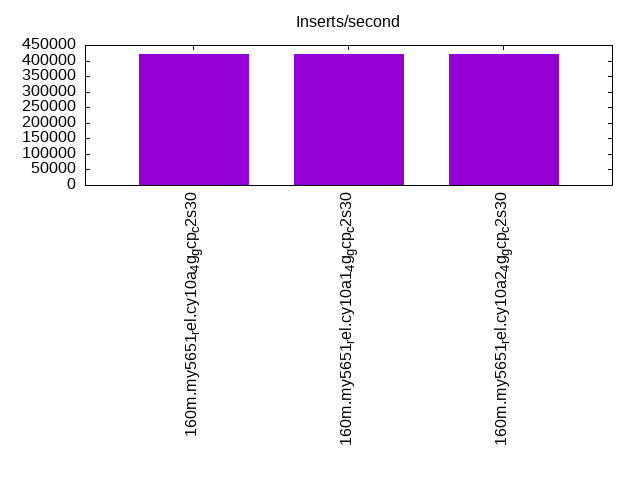
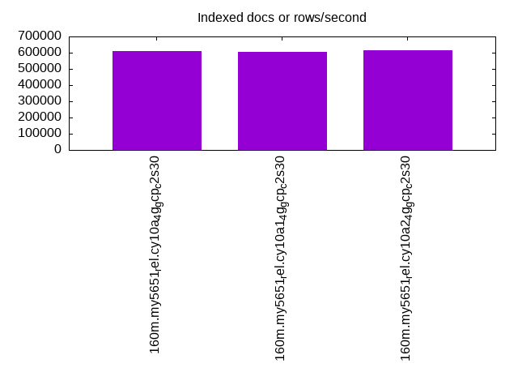
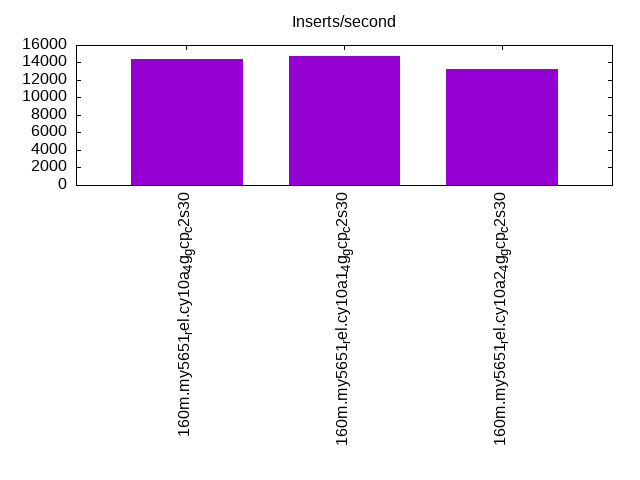
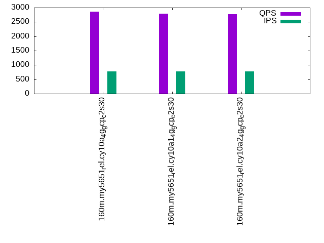
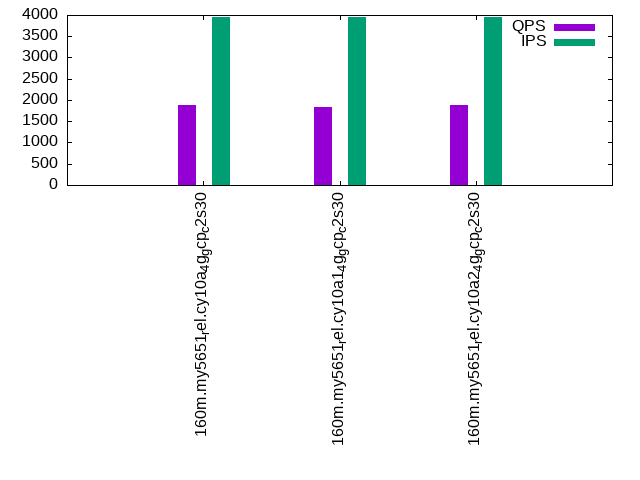
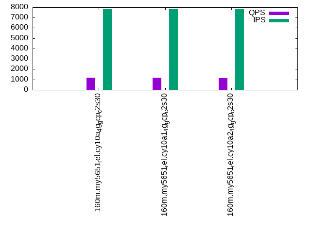

This is a report for the insert benchmark with 160M docs and 8 client(s). It is generated by scripts (bash, awk, sed) and Tufte might not be impressed. An overview of the insert benchmark is here and a short update is here. Below, by DBMS, I mean DBMS+version.config. An example is my8020.c10b40 where my means MySQL, 8020 is version 8.0.20 and c10b40 is the name for the configuration file.
The test server is a c2-standard-30 from GCP with 15 cores, hyperthreads disabled, 120G RAM, XFS + SW RAID 0 on 4 NVMe devices (1.5TB). The benchmark was run with 8 client and there were 1 or 3 connections per client (1 for queries or inserts without rate limits, 1+1 for rate limited inserts+deletes). There are 8 tables, client per table. It loads 160M rows without secondary indexes, creates secondary indexes, then inserts 80M rows with a delete per insert to avoid growing the table. It then does 3 read+write tests for 1800s each that do queries as fast as possible with 100, 500 and then 1000 inserts/second/client concurrent with the queries and 1000 deletes/second to avoid growing the table. The database is cached by the OS but not by InnoDB.
The tested DBMS are:
The numbers are inserts/s for l.i0 and l.i1, indexed docs (or rows) /s for l.x and queries/s for q*.2. The values are the average rate over the entire test for inserts (IPS) and queries (QPS). The range of values for IPS and QPS is split into 3 parts: bottom 25%, middle 50%, top 25%. Values in the bottom 25% have a red background, values in the top 25% have a green background and values in the middle have no color. A gray background is used for values that can be ignored because the DBMS did not sustain the target insert rate. Red backgrounds are not used when the minimum value is within 80% of the max value.
| dbms | l.i0 | l.x | l.i1 | q100.1 | q500.1 | q1000.1 |
|---|---|---|---|---|---|---|
| 160m.my5651_rel.cy10a_4g_gcp_c2s30 | 422164 | 608745 | 14388 | 2850 | 1893 | 1155 |
| 160m.my5651_rel.cy10a1_4g_gcp_c2s30 | 421053 | 604151 | 14785 | 2790 | 1841 | 1157 |
| 160m.my5651_rel.cy10a2_4g_gcp_c2s30 | 422164 | 613410 | 13212 | 2775 | 1873 | 1142 |
This table has relative throughput, throughput for the DBMS relative to the DBMS in the first line, using the absolute throughput from the previous table.
| dbms | l.i0 | l.x | l.i1 | q100.1 | q500.1 | q1000.1 |
|---|---|---|---|---|---|---|
| 160m.my5651_rel.cy10a_4g_gcp_c2s30 | 1.00 | 1.00 | 1.00 | 1.00 | 1.00 | 1.00 |
| 160m.my5651_rel.cy10a1_4g_gcp_c2s30 | 1.00 | 0.99 | 1.03 | 0.98 | 0.97 | 1.00 |
| 160m.my5651_rel.cy10a2_4g_gcp_c2s30 | 1.00 | 1.01 | 0.92 | 0.97 | 0.99 | 0.99 |
This lists the average rate of inserts/s for the tests that do inserts concurrent with queries. For such tests the query rate is listed in the table above. The read+write tests are setup so that the insert rate should match the target rate every second. Cells that are not at least 95% of the target have a red background to indicate a failure to satisfy the target.
| dbms | q100.1 | q500.1 | q1000.1 |
|---|---|---|---|
| my5651_rel.cy10a_4g_gcp_c2s30 | 780 | 3943 | 7843 |
| my5651_rel.cy10a1_4g_gcp_c2s30 | 782 | 3945 | 7856 |
| my5651_rel.cy10a2_4g_gcp_c2s30 | 775 | 3943 | 7826 |
| target | 800 | 4000 | 8000 |
l.i0: load without secondary indexes. Graphs for performance per 1-second interval are here.
Average throughput:
Insert response time histogram: each cell has the percentage of responses that take <= the time in the header and max is the max response time in seconds. For the max column values in the top 25% of the range have a red background and in the bottom 25% of the range have a green background. The red background is not used when the min value is within 80% of the max value.
| dbms | 256us | 1ms | 4ms | 16ms | 64ms | 256ms | 1s | 4s | 16s | gt | max |
|---|---|---|---|---|---|---|---|---|---|---|---|
| my5651_rel.cy10a_4g_gcp_c2s30 | 2.307 | 97.300 | 0.216 | 0.163 | 0.014 | 0.206 | |||||
| my5651_rel.cy10a1_4g_gcp_c2s30 | 2.213 | 97.386 | 0.221 | 0.165 | 0.014 | 0.227 | |||||
| my5651_rel.cy10a2_4g_gcp_c2s30 | 2.270 | 97.335 | 0.221 | 0.161 | 0.014 | 0.211 |
Performance metrics for the DBMS listed above. Some are normalized by throughput, others are not. Legend for results is here.
ips qps rps rmbps wps wmbps rpq rkbpq wpi wkbpi csps cpups cspq cpupq dbgb1 dbgb2 rss maxop p50 p99 tag 422164 0 3331 13.0 354.5 101.7 0.008 0.032 0.001 0.247 89623 42.6 0.212 15 10.6 139.1 4.3 0.206 54440 43053 160m.my5651_rel.cy10a_4g_gcp_c2s30 421053 0 3313 12.9 355.7 102.1 0.008 0.031 0.001 0.248 86875 42.4 0.206 15 10.6 139.1 4.3 0.227 54341 41854 160m.my5651_rel.cy10a1_4g_gcp_c2s30 422164 0 3306 12.9 359.3 103.0 0.008 0.031 0.001 0.250 88940 42.3 0.211 15 10.6 139.1 4.3 0.211 54441 43453 160m.my5651_rel.cy10a2_4g_gcp_c2s30
l.x: create secondary indexes.
Average throughput:
Performance metrics for the DBMS listed above. Some are normalized by throughput, others are not. Legend for results is here.
ips qps rps rmbps wps wmbps rpq rkbpq wpi wkbpi csps cpups cspq cpupq dbgb1 dbgb2 rss maxop p50 p99 tag 608745 0 277 1.1 3217.0 574.5 0.000 0.002 0.005 0.966 27489 39.8 0.045 10 21.7 150.2 4.3 0.002 NA NA 160m.my5651_rel.cy10a_4g_gcp_c2s30 604151 0 275 1.1 3187.4 565.9 0.000 0.002 0.005 0.959 19301 39.1 0.032 10 21.7 150.2 4.4 0.003 NA NA 160m.my5651_rel.cy10a1_4g_gcp_c2s30 613410 0 269 1.1 3141.1 570.8 0.000 0.002 0.005 0.953 26662 39.6 0.043 10 21.7 150.2 4.3 0.003 NA NA 160m.my5651_rel.cy10a2_4g_gcp_c2s30
l.i1: continue load after secondary indexes created. Graphs for performance per 1-second interval are here.
Average throughput:
Insert response time histogram: each cell has the percentage of responses that take <= the time in the header and max is the max response time in seconds. For the max column values in the top 25% of the range have a red background and in the bottom 25% of the range have a green background. The red background is not used when the min value is within 80% of the max value.
| dbms | 256us | 1ms | 4ms | 16ms | 64ms | 256ms | 1s | 4s | 16s | gt | max |
|---|---|---|---|---|---|---|---|---|---|---|---|
| my5651_rel.cy10a_4g_gcp_c2s30 | 0.742 | 27.644 | 67.640 | 3.737 | 0.237 | 0.791 | |||||
| my5651_rel.cy10a1_4g_gcp_c2s30 | 0.669 | 32.602 | 62.987 | 3.302 | 0.440 | 0.837 | |||||
| my5651_rel.cy10a2_4g_gcp_c2s30 | 1.084 | 26.263 | 65.578 | 6.802 | 0.273 | nonzero | 1.024 |
Delete response time histogram: each cell has the percentage of responses that take <= the time in the header and max is the max response time in seconds. For the max column values in the top 25% of the range have a red background and in the bottom 25% of the range have a green background. The red background is not used when the min value is within 80% of the max value.
| dbms | 256us | 1ms | 4ms | 16ms | 64ms | 256ms | 1s | 4s | 16s | gt | max |
|---|---|---|---|---|---|---|---|---|---|---|---|
| my5651_rel.cy10a_4g_gcp_c2s30 | 0.001 | 1.172 | 30.721 | 65.338 | 2.748 | 0.019 | 0.469 | ||||
| my5651_rel.cy10a1_4g_gcp_c2s30 | 0.001 | 1.134 | 35.854 | 60.411 | 2.417 | 0.183 | 0.561 | ||||
| my5651_rel.cy10a2_4g_gcp_c2s30 | 0.001 | 1.467 | 29.084 | 63.768 | 5.640 | 0.039 | 0.541 |
Performance metrics for the DBMS listed above. Some are normalized by throughput, others are not. Legend for results is here.
ips qps rps rmbps wps wmbps rpq rkbpq wpi wkbpi csps cpups cspq cpupq dbgb1 dbgb2 rss maxop p50 p99 tag 14388 0 482 2.4 14977.2 458.3 0.034 0.171 1.041 32.616 150649 34.0 10.470 354 40.9 175.5 4.3 0.791 1848 200 160m.my5651_rel.cy10a_4g_gcp_c2s30 14785 0 494 2.5 14870.2 472.3 0.033 0.171 1.006 32.710 132686 35.3 8.975 358 41.0 175.6 4.3 0.837 1898 200 160m.my5651_rel.cy10a1_4g_gcp_c2s30 13212 0 448 2.3 14979.5 455.1 0.034 0.175 1.134 35.274 148685 31.9 11.254 362 40.9 175.6 4.3 1.024 1699 200 160m.my5651_rel.cy10a2_4g_gcp_c2s30
q100.1: range queries with 100 insert/s per client. Graphs for performance per 1-second interval are here.
Average throughput:
Query response time histogram: each cell has the percentage of responses that take <= the time in the header and max is the max response time in seconds. For max values in the top 25% of the range have a red background and in the bottom 25% of the range have a green background. The red background is not used when the min value is within 80% of the max value.
| dbms | 256us | 1ms | 4ms | 16ms | 64ms | 256ms | 1s | 4s | 16s | gt | max |
|---|---|---|---|---|---|---|---|---|---|---|---|
| my5651_rel.cy10a_4g_gcp_c2s30 | 27.041 | 23.203 | 27.740 | 19.571 | 2.439 | 0.006 | 0.180 | ||||
| my5651_rel.cy10a1_4g_gcp_c2s30 | 26.955 | 24.081 | 27.440 | 18.660 | 2.856 | 0.008 | nonzero | 0.328 | |||
| my5651_rel.cy10a2_4g_gcp_c2s30 | 27.044 | 23.654 | 27.543 | 18.925 | 2.828 | 0.007 | 0.236 |
Insert response time histogram: each cell has the percentage of responses that take <= the time in the header and max is the max response time in seconds. For max values in the top 25% of the range have a red background and in the bottom 25% of the range have a green background. The red background is not used when the min value is within 80% of the max value.
| dbms | 256us | 1ms | 4ms | 16ms | 64ms | 256ms | 1s | 4s | 16s | gt | max |
|---|---|---|---|---|---|---|---|---|---|---|---|
| my5651_rel.cy10a_4g_gcp_c2s30 | 38.715 | 57.142 | 4.135 | 0.007 | 0.075 | ||||||
| my5651_rel.cy10a1_4g_gcp_c2s30 | 38.847 | 56.580 | 4.566 | 0.007 | 0.067 | ||||||
| my5651_rel.cy10a2_4g_gcp_c2s30 | 40.448 | 54.802 | 4.712 | 0.038 | 0.220 |
Delete response time histogram: each cell has the percentage of responses that take <= the time in the header and max is the max response time in seconds. For max values in the top 25% of the range have a red background and in the bottom 25% of the range have a green background. The red background is not used when the min value is within 80% of the max value.
| dbms | 256us | 1ms | 4ms | 16ms | 64ms | 256ms | 1s | 4s | 16s | gt | max |
|---|---|---|---|---|---|---|---|---|---|---|---|
| my5651_rel.cy10a_4g_gcp_c2s30 | 39.788 | 56.306 | 3.882 | 0.024 | 0.209 | ||||||
| my5651_rel.cy10a1_4g_gcp_c2s30 | 0.003 | 39.622 | 55.851 | 4.521 | 0.003 | 0.076 | |||||
| my5651_rel.cy10a2_4g_gcp_c2s30 | 0.003 | 40.979 | 54.438 | 4.542 | 0.038 | 0.228 |
Performance metrics for the DBMS listed above. Some are normalized by throughput, others are not. Legend for results is here.
ips qps rps rmbps wps wmbps rpq rkbpq wpi wkbpi csps cpups cspq cpupq dbgb1 dbgb2 rss maxop p50 p99 tag 780 2850 33 0.3 14371.1 314.4 0.012 0.107 18.415 412.596 143645 22.9 50.400 1205 40.9 175.5 4.3 0.180 368 80 160m.my5651_rel.cy10a_4g_gcp_c2s30 782 2790 33 0.3 13915.8 304.2 0.012 0.110 17.793 398.231 128930 22.7 46.208 1220 41.0 175.6 4.3 0.328 352 64 160m.my5651_rel.cy10a1_4g_gcp_c2s30 775 2775 34 0.3 14328.2 315.2 0.012 0.122 18.478 416.192 139846 22.1 50.388 1194 40.9 175.6 4.3 0.236 352 96 160m.my5651_rel.cy10a2_4g_gcp_c2s30
q500.1: range queries with 500 insert/s per client. Graphs for performance per 1-second interval are here.
Average throughput:
Query response time histogram: each cell has the percentage of responses that take <= the time in the header and max is the max response time in seconds. For max values in the top 25% of the range have a red background and in the bottom 25% of the range have a green background. The red background is not used when the min value is within 80% of the max value.
| dbms | 256us | 1ms | 4ms | 16ms | 64ms | 256ms | 1s | 4s | 16s | gt | max |
|---|---|---|---|---|---|---|---|---|---|---|---|
| my5651_rel.cy10a_4g_gcp_c2s30 | 24.995 | 22.166 | 20.396 | 26.252 | 6.175 | 0.016 | nonzero | 0.268 | |||
| my5651_rel.cy10a1_4g_gcp_c2s30 | 23.952 | 24.142 | 20.873 | 24.120 | 6.872 | 0.041 | 0.231 | ||||
| my5651_rel.cy10a2_4g_gcp_c2s30 | 25.773 | 21.619 | 20.101 | 26.137 | 6.350 | 0.020 | nonzero | 0.268 |
Insert response time histogram: each cell has the percentage of responses that take <= the time in the header and max is the max response time in seconds. For max values in the top 25% of the range have a red background and in the bottom 25% of the range have a green background. The red background is not used when the min value is within 80% of the max value.
| dbms | 256us | 1ms | 4ms | 16ms | 64ms | 256ms | 1s | 4s | 16s | gt | max |
|---|---|---|---|---|---|---|---|---|---|---|---|
| my5651_rel.cy10a_4g_gcp_c2s30 | 40.314 | 50.576 | 9.108 | 0.002 | 0.069 | ||||||
| my5651_rel.cy10a1_4g_gcp_c2s30 | 12.097 | 57.088 | 30.561 | 0.253 | 0.142 | ||||||
| my5651_rel.cy10a2_4g_gcp_c2s30 | 40.447 | 50.994 | 8.553 | 0.006 | 0.084 |
Delete response time histogram: each cell has the percentage of responses that take <= the time in the header and max is the max response time in seconds. For max values in the top 25% of the range have a red background and in the bottom 25% of the range have a green background. The red background is not used when the min value is within 80% of the max value.
| dbms | 256us | 1ms | 4ms | 16ms | 64ms | 256ms | 1s | 4s | 16s | gt | max |
|---|---|---|---|---|---|---|---|---|---|---|---|
| my5651_rel.cy10a_4g_gcp_c2s30 | 0.003 | 39.629 | 51.115 | 9.250 | 0.003 | 0.086 | |||||
| my5651_rel.cy10a1_4g_gcp_c2s30 | 12.492 | 57.163 | 30.141 | 0.204 | 0.142 | ||||||
| my5651_rel.cy10a2_4g_gcp_c2s30 | 0.002 | 39.789 | 51.478 | 8.728 | 0.003 | 0.084 |
Performance metrics for the DBMS listed above. Some are normalized by throughput, others are not. Legend for results is here.
ips qps rps rmbps wps wmbps rpq rkbpq wpi wkbpi csps cpups cspq cpupq dbgb1 dbgb2 rss maxop p50 p99 tag 3943 1893 151 1.0 16096.6 356.5 0.080 0.558 4.082 92.586 143967 16.4 76.048 1299 40.9 175.5 4.3 0.268 240 176 160m.my5651_rel.cy10a_4g_gcp_c2s30 3945 1841 176 1.5 15311.9 344.0 0.095 0.811 3.881 89.299 129591 18.2 70.376 1483 41.0 175.6 4.4 0.231 224 160 160m.my5651_rel.cy10a1_4g_gcp_c2s30 3943 1873 148 1.0 15583.6 350.4 0.079 0.545 3.952 90.989 133608 16.2 71.345 1298 40.9 175.6 4.3 0.268 240 160 160m.my5651_rel.cy10a2_4g_gcp_c2s30
q1000.1: range queries with 1000 insert/s per client. Graphs for performance per 1-second interval are here.
Average throughput:
Query response time histogram: each cell has the percentage of responses that take <= the time in the header and max is the max response time in seconds. For max values in the top 25% of the range have a red background and in the bottom 25% of the range have a green background. The red background is not used when the min value is within 80% of the max value.
| dbms | 256us | 1ms | 4ms | 16ms | 64ms | 256ms | 1s | 4s | 16s | gt | max |
|---|---|---|---|---|---|---|---|---|---|---|---|
| my5651_rel.cy10a_4g_gcp_c2s30 | 14.353 | 19.626 | 19.268 | 32.650 | 14.004 | 0.098 | nonzero | 0.381 | |||
| my5651_rel.cy10a1_4g_gcp_c2s30 | 14.169 | 21.001 | 20.133 | 31.012 | 13.468 | 0.215 | 0.003 | 0.903 | |||
| my5651_rel.cy10a2_4g_gcp_c2s30 | 15.066 | 19.645 | 18.961 | 32.072 | 14.139 | 0.115 | 0.001 | 0.530 |
Insert response time histogram: each cell has the percentage of responses that take <= the time in the header and max is the max response time in seconds. For max values in the top 25% of the range have a red background and in the bottom 25% of the range have a green background. The red background is not used when the min value is within 80% of the max value.
| dbms | 256us | 1ms | 4ms | 16ms | 64ms | 256ms | 1s | 4s | 16s | gt | max |
|---|---|---|---|---|---|---|---|---|---|---|---|
| my5651_rel.cy10a_4g_gcp_c2s30 | 14.494 | 45.655 | 39.311 | 0.529 | 0.012 | 0.659 | |||||
| my5651_rel.cy10a1_4g_gcp_c2s30 | 3.377 | 35.315 | 59.009 | 2.158 | 0.141 | 0.708 | |||||
| my5651_rel.cy10a2_4g_gcp_c2s30 | 21.233 | 48.276 | 29.952 | 0.534 | 0.004 | 0.737 |
Delete response time histogram: each cell has the percentage of responses that take <= the time in the header and max is the max response time in seconds. For max values in the top 25% of the range have a red background and in the bottom 25% of the range have a green background. The red background is not used when the min value is within 80% of the max value.
| dbms | 256us | 1ms | 4ms | 16ms | 64ms | 256ms | 1s | 4s | 16s | gt | max |
|---|---|---|---|---|---|---|---|---|---|---|---|
| my5651_rel.cy10a_4g_gcp_c2s30 | 14.830 | 45.956 | 38.808 | 0.400 | 0.006 | 0.443 | |||||
| my5651_rel.cy10a1_4g_gcp_c2s30 | 3.348 | 36.404 | 58.316 | 1.842 | 0.090 | 0.770 | |||||
| my5651_rel.cy10a2_4g_gcp_c2s30 | 21.290 | 48.396 | 29.874 | 0.435 | 0.004 | 0.940 |
Performance metrics for the DBMS listed above. Some are normalized by throughput, others are not. Legend for results is here.
ips qps rps rmbps wps wmbps rpq rkbpq wpi wkbpi csps cpups cspq cpupq dbgb1 dbgb2 rss maxop p50 p99 tag 7843 1155 320 2.0 16634.9 414.8 0.277 1.809 2.121 54.157 136518 22.2 118.197 2883 41.4 176.5 4.3 0.381 144 64 160m.my5651_rel.cy10a_4g_gcp_c2s30 7856 1157 338 2.4 15994.2 401.1 0.292 2.147 2.036 52.279 128818 24.5 111.319 3176 41.5 176.8 4.3 0.903 144 48 160m.my5651_rel.cy10a1_4g_gcp_c2s30 7826 1142 310 1.9 16118.8 414.0 0.272 1.725 2.060 54.173 128996 21.3 113.006 2799 41.5 176.6 4.3 0.530 144 48 160m.my5651_rel.cy10a2_4g_gcp_c2s30
l.i0: load without secondary indexes
Performance metrics for all DBMS, not just the ones listed above. Some are normalized by throughput, others are not. Legend for results is here.
ips qps rps rmbps wps wmbps rpq rkbpq wpi wkbpi csps cpups cspq cpupq dbgb1 dbgb2 rss maxop p50 p99 tag 422164 0 3331 13.0 354.5 101.7 0.008 0.032 0.001 0.247 89623 42.6 0.212 15 10.6 139.1 4.3 0.206 54440 43053 160m.my5651_rel.cy10a_4g_gcp_c2s30 421053 0 3313 12.9 355.7 102.1 0.008 0.031 0.001 0.248 86875 42.4 0.206 15 10.6 139.1 4.3 0.227 54341 41854 160m.my5651_rel.cy10a1_4g_gcp_c2s30 422164 0 3306 12.9 359.3 103.0 0.008 0.031 0.001 0.250 88940 42.3 0.211 15 10.6 139.1 4.3 0.211 54441 43453 160m.my5651_rel.cy10a2_4g_gcp_c2s30
l.x: create secondary indexes
Performance metrics for all DBMS, not just the ones listed above. Some are normalized by throughput, others are not. Legend for results is here.
ips qps rps rmbps wps wmbps rpq rkbpq wpi wkbpi csps cpups cspq cpupq dbgb1 dbgb2 rss maxop p50 p99 tag 608745 0 277 1.1 3217.0 574.5 0.000 0.002 0.005 0.966 27489 39.8 0.045 10 21.7 150.2 4.3 0.002 NA NA 160m.my5651_rel.cy10a_4g_gcp_c2s30 604151 0 275 1.1 3187.4 565.9 0.000 0.002 0.005 0.959 19301 39.1 0.032 10 21.7 150.2 4.4 0.003 NA NA 160m.my5651_rel.cy10a1_4g_gcp_c2s30 613410 0 269 1.1 3141.1 570.8 0.000 0.002 0.005 0.953 26662 39.6 0.043 10 21.7 150.2 4.3 0.003 NA NA 160m.my5651_rel.cy10a2_4g_gcp_c2s30
l.i1: continue load after secondary indexes created
Performance metrics for all DBMS, not just the ones listed above. Some are normalized by throughput, others are not. Legend for results is here.
ips qps rps rmbps wps wmbps rpq rkbpq wpi wkbpi csps cpups cspq cpupq dbgb1 dbgb2 rss maxop p50 p99 tag 14388 0 482 2.4 14977.2 458.3 0.034 0.171 1.041 32.616 150649 34.0 10.470 354 40.9 175.5 4.3 0.791 1848 200 160m.my5651_rel.cy10a_4g_gcp_c2s30 14785 0 494 2.5 14870.2 472.3 0.033 0.171 1.006 32.710 132686 35.3 8.975 358 41.0 175.6 4.3 0.837 1898 200 160m.my5651_rel.cy10a1_4g_gcp_c2s30 13212 0 448 2.3 14979.5 455.1 0.034 0.175 1.134 35.274 148685 31.9 11.254 362 40.9 175.6 4.3 1.024 1699 200 160m.my5651_rel.cy10a2_4g_gcp_c2s30
q100.1: range queries with 100 insert/s per client
Performance metrics for all DBMS, not just the ones listed above. Some are normalized by throughput, others are not. Legend for results is here.
ips qps rps rmbps wps wmbps rpq rkbpq wpi wkbpi csps cpups cspq cpupq dbgb1 dbgb2 rss maxop p50 p99 tag 780 2850 33 0.3 14371.1 314.4 0.012 0.107 18.415 412.596 143645 22.9 50.400 1205 40.9 175.5 4.3 0.180 368 80 160m.my5651_rel.cy10a_4g_gcp_c2s30 782 2790 33 0.3 13915.8 304.2 0.012 0.110 17.793 398.231 128930 22.7 46.208 1220 41.0 175.6 4.3 0.328 352 64 160m.my5651_rel.cy10a1_4g_gcp_c2s30 775 2775 34 0.3 14328.2 315.2 0.012 0.122 18.478 416.192 139846 22.1 50.388 1194 40.9 175.6 4.3 0.236 352 96 160m.my5651_rel.cy10a2_4g_gcp_c2s30
q500.1: range queries with 500 insert/s per client
Performance metrics for all DBMS, not just the ones listed above. Some are normalized by throughput, others are not. Legend for results is here.
ips qps rps rmbps wps wmbps rpq rkbpq wpi wkbpi csps cpups cspq cpupq dbgb1 dbgb2 rss maxop p50 p99 tag 3943 1893 151 1.0 16096.6 356.5 0.080 0.558 4.082 92.586 143967 16.4 76.048 1299 40.9 175.5 4.3 0.268 240 176 160m.my5651_rel.cy10a_4g_gcp_c2s30 3945 1841 176 1.5 15311.9 344.0 0.095 0.811 3.881 89.299 129591 18.2 70.376 1483 41.0 175.6 4.4 0.231 224 160 160m.my5651_rel.cy10a1_4g_gcp_c2s30 3943 1873 148 1.0 15583.6 350.4 0.079 0.545 3.952 90.989 133608 16.2 71.345 1298 40.9 175.6 4.3 0.268 240 160 160m.my5651_rel.cy10a2_4g_gcp_c2s30
q1000.1: range queries with 1000 insert/s per client
Performance metrics for all DBMS, not just the ones listed above. Some are normalized by throughput, others are not. Legend for results is here.
ips qps rps rmbps wps wmbps rpq rkbpq wpi wkbpi csps cpups cspq cpupq dbgb1 dbgb2 rss maxop p50 p99 tag 7843 1155 320 2.0 16634.9 414.8 0.277 1.809 2.121 54.157 136518 22.2 118.197 2883 41.4 176.5 4.3 0.381 144 64 160m.my5651_rel.cy10a_4g_gcp_c2s30 7856 1157 338 2.4 15994.2 401.1 0.292 2.147 2.036 52.279 128818 24.5 111.319 3176 41.5 176.8 4.3 0.903 144 48 160m.my5651_rel.cy10a1_4g_gcp_c2s30 7826 1142 310 1.9 16118.8 414.0 0.272 1.725 2.060 54.173 128996 21.3 113.006 2799 41.5 176.6 4.3 0.530 144 48 160m.my5651_rel.cy10a2_4g_gcp_c2s30
Insert response time histogram
256us 1ms 4ms 16ms 64ms 256ms 1s 4s 16s gt max tag 0.000 2.307 97.300 0.216 0.163 0.014 0.000 0.000 0.000 0.000 0.206 my5651_rel.cy10a_4g_gcp_c2s30 0.000 2.213 97.386 0.221 0.165 0.014 0.000 0.000 0.000 0.000 0.227 my5651_rel.cy10a1_4g_gcp_c2s30 0.000 2.270 97.335 0.221 0.161 0.014 0.000 0.000 0.000 0.000 0.211 my5651_rel.cy10a2_4g_gcp_c2s30
TODO - determine whether there is data for create index response time
Insert response time histogram
256us 1ms 4ms 16ms 64ms 256ms 1s 4s 16s gt max tag 0.000 0.000 0.742 27.644 67.640 3.737 0.237 0.000 0.000 0.000 0.791 my5651_rel.cy10a_4g_gcp_c2s30 0.000 0.000 0.669 32.602 62.987 3.302 0.440 0.000 0.000 0.000 0.837 my5651_rel.cy10a1_4g_gcp_c2s30 0.000 0.000 1.084 26.263 65.578 6.802 0.273 nonzero 0.000 0.000 1.024 my5651_rel.cy10a2_4g_gcp_c2s30
Delete response time histogram
256us 1ms 4ms 16ms 64ms 256ms 1s 4s 16s gt max tag 0.000 0.001 1.172 30.721 65.338 2.748 0.019 0.000 0.000 0.000 0.469 my5651_rel.cy10a_4g_gcp_c2s30 0.000 0.001 1.134 35.854 60.411 2.417 0.183 0.000 0.000 0.000 0.561 my5651_rel.cy10a1_4g_gcp_c2s30 0.000 0.001 1.467 29.084 63.768 5.640 0.039 0.000 0.000 0.000 0.541 my5651_rel.cy10a2_4g_gcp_c2s30
Query response time histogram
256us 1ms 4ms 16ms 64ms 256ms 1s 4s 16s gt max tag 27.041 23.203 27.740 19.571 2.439 0.006 0.000 0.000 0.000 0.000 0.180 my5651_rel.cy10a_4g_gcp_c2s30 26.955 24.081 27.440 18.660 2.856 0.008 nonzero 0.000 0.000 0.000 0.328 my5651_rel.cy10a1_4g_gcp_c2s30 27.044 23.654 27.543 18.925 2.828 0.007 0.000 0.000 0.000 0.000 0.236 my5651_rel.cy10a2_4g_gcp_c2s30
Insert response time histogram
256us 1ms 4ms 16ms 64ms 256ms 1s 4s 16s gt max tag 0.000 0.000 38.715 57.142 4.135 0.007 0.000 0.000 0.000 0.000 0.075 my5651_rel.cy10a_4g_gcp_c2s30 0.000 0.000 38.847 56.580 4.566 0.007 0.000 0.000 0.000 0.000 0.067 my5651_rel.cy10a1_4g_gcp_c2s30 0.000 0.000 40.448 54.802 4.712 0.038 0.000 0.000 0.000 0.000 0.220 my5651_rel.cy10a2_4g_gcp_c2s30
Delete response time histogram
256us 1ms 4ms 16ms 64ms 256ms 1s 4s 16s gt max tag 0.000 0.000 39.788 56.306 3.882 0.024 0.000 0.000 0.000 0.000 0.209 my5651_rel.cy10a_4g_gcp_c2s30 0.000 0.003 39.622 55.851 4.521 0.003 0.000 0.000 0.000 0.000 0.076 my5651_rel.cy10a1_4g_gcp_c2s30 0.000 0.003 40.979 54.438 4.542 0.038 0.000 0.000 0.000 0.000 0.228 my5651_rel.cy10a2_4g_gcp_c2s30
Query response time histogram
256us 1ms 4ms 16ms 64ms 256ms 1s 4s 16s gt max tag 24.995 22.166 20.396 26.252 6.175 0.016 nonzero 0.000 0.000 0.000 0.268 my5651_rel.cy10a_4g_gcp_c2s30 23.952 24.142 20.873 24.120 6.872 0.041 0.000 0.000 0.000 0.000 0.231 my5651_rel.cy10a1_4g_gcp_c2s30 25.773 21.619 20.101 26.137 6.350 0.020 nonzero 0.000 0.000 0.000 0.268 my5651_rel.cy10a2_4g_gcp_c2s30
Insert response time histogram
256us 1ms 4ms 16ms 64ms 256ms 1s 4s 16s gt max tag 0.000 0.000 40.314 50.576 9.108 0.002 0.000 0.000 0.000 0.000 0.069 my5651_rel.cy10a_4g_gcp_c2s30 0.000 0.000 12.097 57.088 30.561 0.253 0.000 0.000 0.000 0.000 0.142 my5651_rel.cy10a1_4g_gcp_c2s30 0.000 0.000 40.447 50.994 8.553 0.006 0.000 0.000 0.000 0.000 0.084 my5651_rel.cy10a2_4g_gcp_c2s30
Delete response time histogram
256us 1ms 4ms 16ms 64ms 256ms 1s 4s 16s gt max tag 0.000 0.003 39.629 51.115 9.250 0.003 0.000 0.000 0.000 0.000 0.086 my5651_rel.cy10a_4g_gcp_c2s30 0.000 0.000 12.492 57.163 30.141 0.204 0.000 0.000 0.000 0.000 0.142 my5651_rel.cy10a1_4g_gcp_c2s30 0.000 0.002 39.789 51.478 8.728 0.003 0.000 0.000 0.000 0.000 0.084 my5651_rel.cy10a2_4g_gcp_c2s30
Query response time histogram
256us 1ms 4ms 16ms 64ms 256ms 1s 4s 16s gt max tag 14.353 19.626 19.268 32.650 14.004 0.098 nonzero 0.000 0.000 0.000 0.381 my5651_rel.cy10a_4g_gcp_c2s30 14.169 21.001 20.133 31.012 13.468 0.215 0.003 0.000 0.000 0.000 0.903 my5651_rel.cy10a1_4g_gcp_c2s30 15.066 19.645 18.961 32.072 14.139 0.115 0.001 0.000 0.000 0.000 0.530 my5651_rel.cy10a2_4g_gcp_c2s30
Insert response time histogram
256us 1ms 4ms 16ms 64ms 256ms 1s 4s 16s gt max tag 0.000 0.000 14.494 45.655 39.311 0.529 0.012 0.000 0.000 0.000 0.659 my5651_rel.cy10a_4g_gcp_c2s30 0.000 0.000 3.377 35.315 59.009 2.158 0.141 0.000 0.000 0.000 0.708 my5651_rel.cy10a1_4g_gcp_c2s30 0.000 0.000 21.233 48.276 29.952 0.534 0.004 0.000 0.000 0.000 0.737 my5651_rel.cy10a2_4g_gcp_c2s30
Delete response time histogram
256us 1ms 4ms 16ms 64ms 256ms 1s 4s 16s gt max tag 0.000 0.000 14.830 45.956 38.808 0.400 0.006 0.000 0.000 0.000 0.443 my5651_rel.cy10a_4g_gcp_c2s30 0.000 0.000 3.348 36.404 58.316 1.842 0.090 0.000 0.000 0.000 0.770 my5651_rel.cy10a1_4g_gcp_c2s30 0.000 0.000 21.290 48.396 29.874 0.435 0.004 0.000 0.000 0.000 0.940 my5651_rel.cy10a2_4g_gcp_c2s30